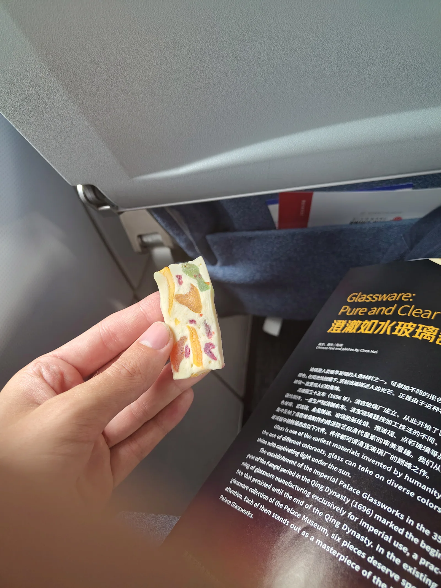

11 August 2026

The second day of airplane travel, although what feels like one, continuous day. My flight was unfortunately grounded for 5 hours, meaning that my short 2.5 hour trip from Beijing to Taipei became almost as long as the original transcontinental flight from Stockholm to Beijing. The clear highlight was this candy that the kind woman next to me offered. I had thankfully brought some famous Swedish plockgodis that I gave to her in return.